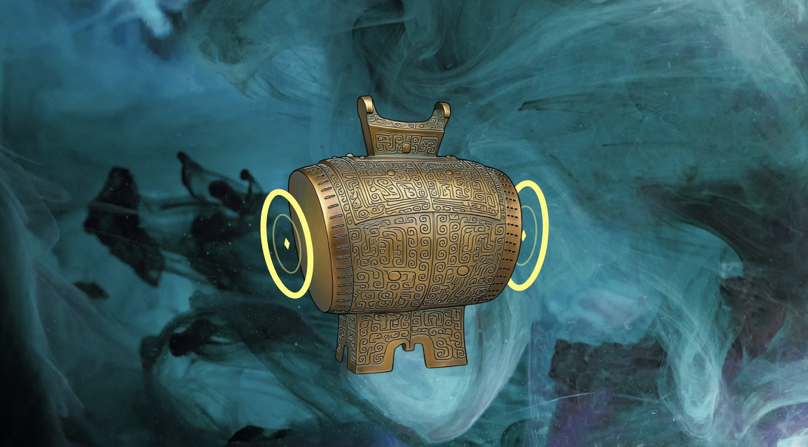
Integrating historical musicology research with interactive design, developed an immersive audiovisual interaction prototype for endangered ancient instruments (Bronze Drum, Bianzhong, Guqin). Utilized MediaPipe for real-time hand tracking and GSAP to create fluid interactive visuals, recontextualizing ancient sonic traditions within a contemporary pop culture framework. This created user-validated visual aesthetics and auditory experiences to revitalize traditional culture and strengthen intergenerational emotional connections.
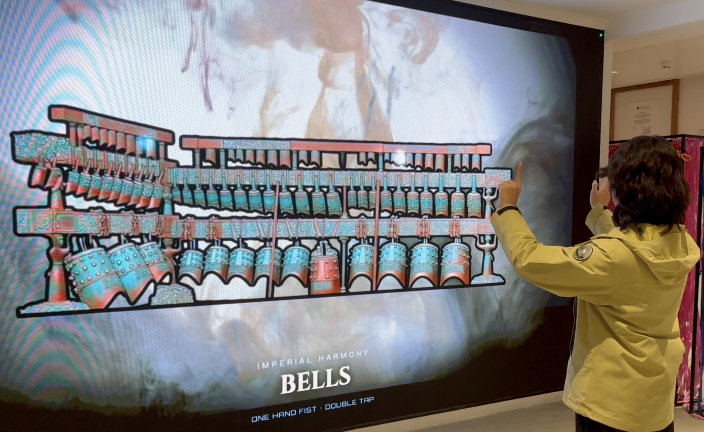
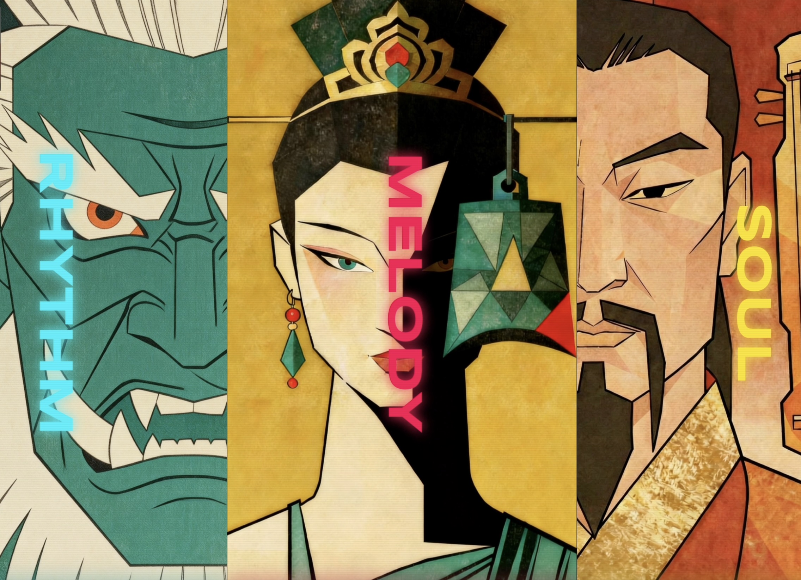
Conducted the entire project lifecycle independently, covering all stages from conceptualization, iterative prototyping, and user testing to academic writing. Solely authored a research paper titled “Enhancing Youth Engagement with Chinese Ancient Instruments through Interactive Digital Tools and Pop Music Fusion”, accepted for publication in Applied and Computational Engineering (Proceedings of the 2nd Neural Computing and Applications Workshop, CONF-SPML 2026) following a double-blind peer review.
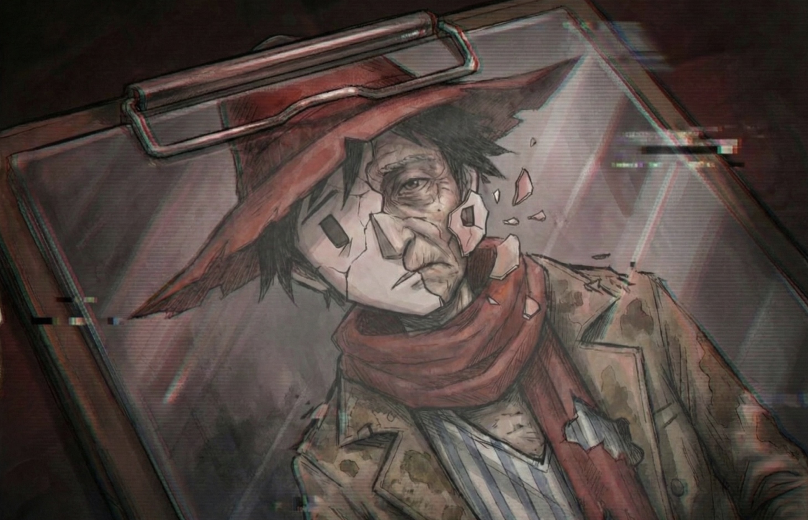
Designed and developed a suspense-driven narrative serious game centered on an unreliable narrator—a protagonist searching for his “missing” wife. This journey not only embodies metaphors of fragmented memory and time, but also serves as a narrative medium to reveal the chaotic and hostile reality confronting dementia patients. It explores the phenomenology of dementia and its associated systemic stigma, leveraging narrative empathy to interrogate systemic discrimination and elevate a personal tragedy into a wider critique of how society marginalizes vulnerable groups.
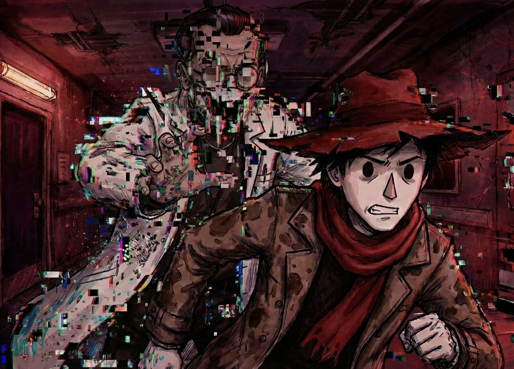
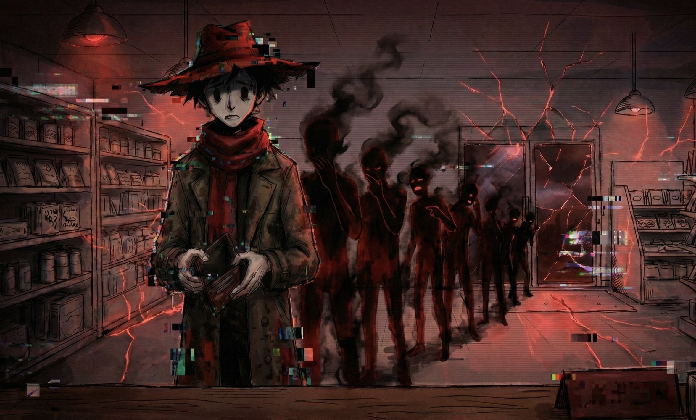
Crafted an experimental high-contrast visual style and designed an empathy mechanism to simulate cognitive decline. By depicting interactive scenarios of social alienation alongside distortive visual effects, the project confronts players with the isolation, rights violations, and systemic marginalization endured by patients and their caregivers. Implemented a temporal illusion mechanic to construct the false premise of the protagonist’s “youth,” ultimately recontextualizing the gameplay experience through the tragic revelation of his wife’s passing due to caregiver burnout and systemic neglect.
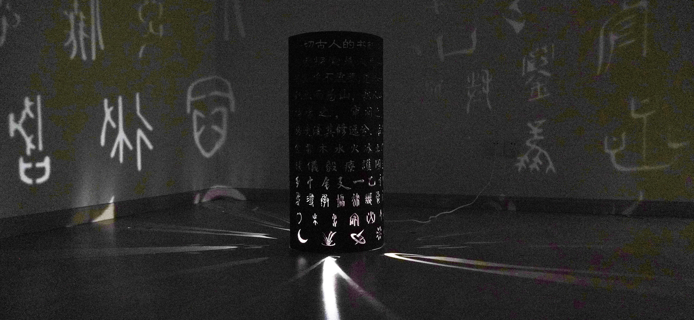
Explored the “linguistic ecology” of endangered dialects by engineering a projection mapping system where historical dialect scripts flow, undulate, and overlap into unrecognizable shadows, visually representing the dissolution of dialects under the pressures of cultural homogenization. Constructed audio narratives that transition from ancient dialect poetry to chaotic electromagnetic noise, demonstrating the deterioration of rich cultural sound signals into meaningless static.
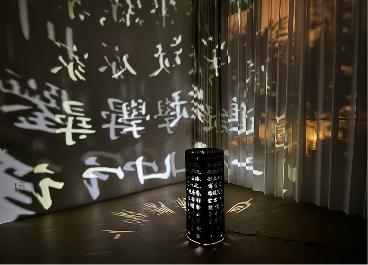
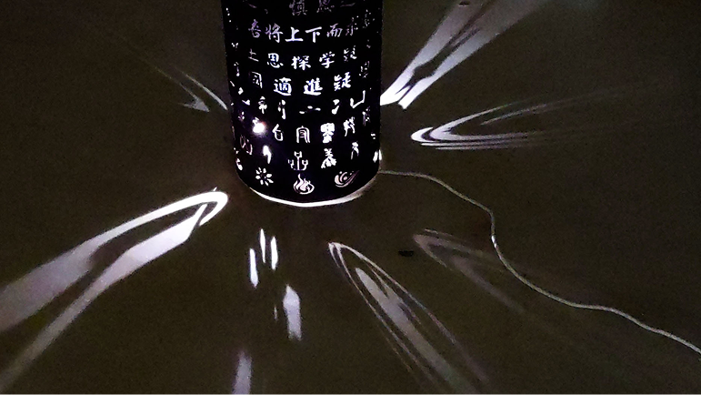
Designed physical layouts and audiovisual systems, mapping dynamic typography onto diverse textured structures to create an immersive environmental experience. Critically examined the erosion of living local languages by standardized speech, confronting audiences with the ecological crisis of linguistic diversity and the vanishing cultural vitality in the digital age.
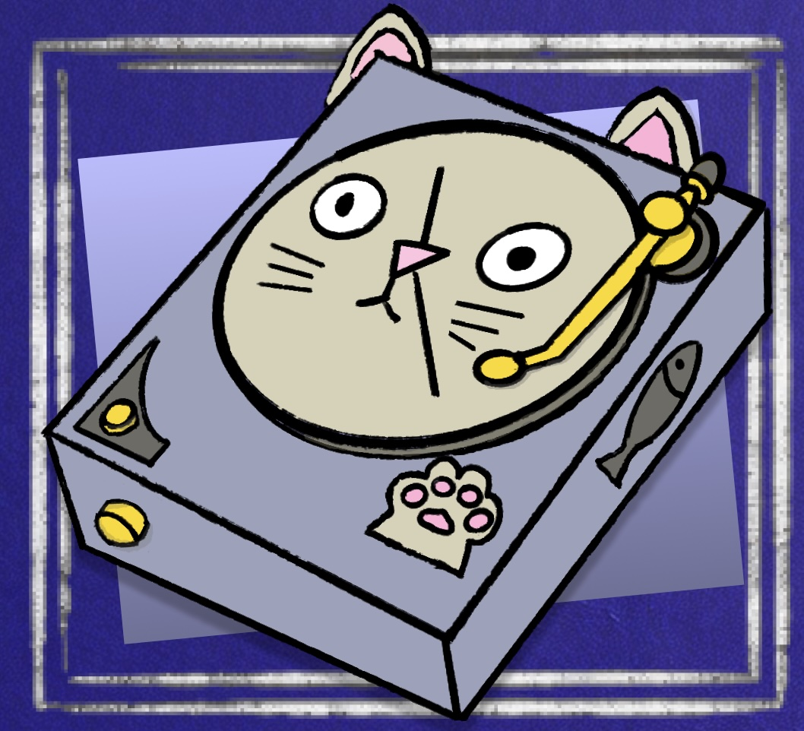
Orchestrated a 3-month participatory design experiment, interviewing random trios weekly to capture their unique sources of joy—from organic forms to cherished objects.
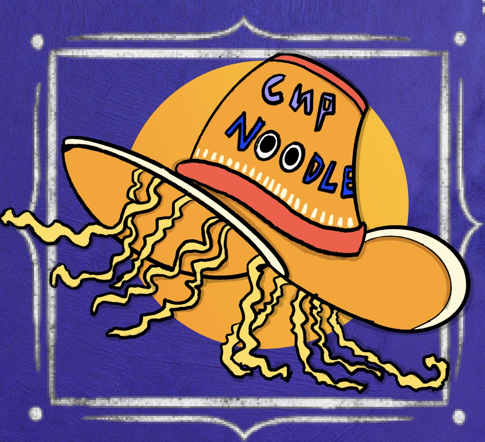
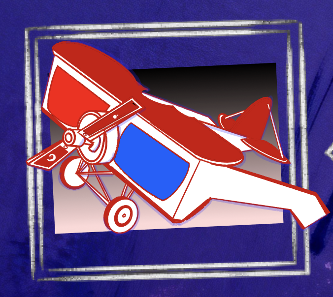
Synthesized these disparate inputs into innovative "speculative lifeforms." The resulting physical exhibition presented these visually rich creatures as a new language for collective healing, reconstructing human connections.
The work reflects a deep societal desire for connection, exploring how sharing and restructuring joy can create new forms of psychological support and healing practices in a high-stress era.
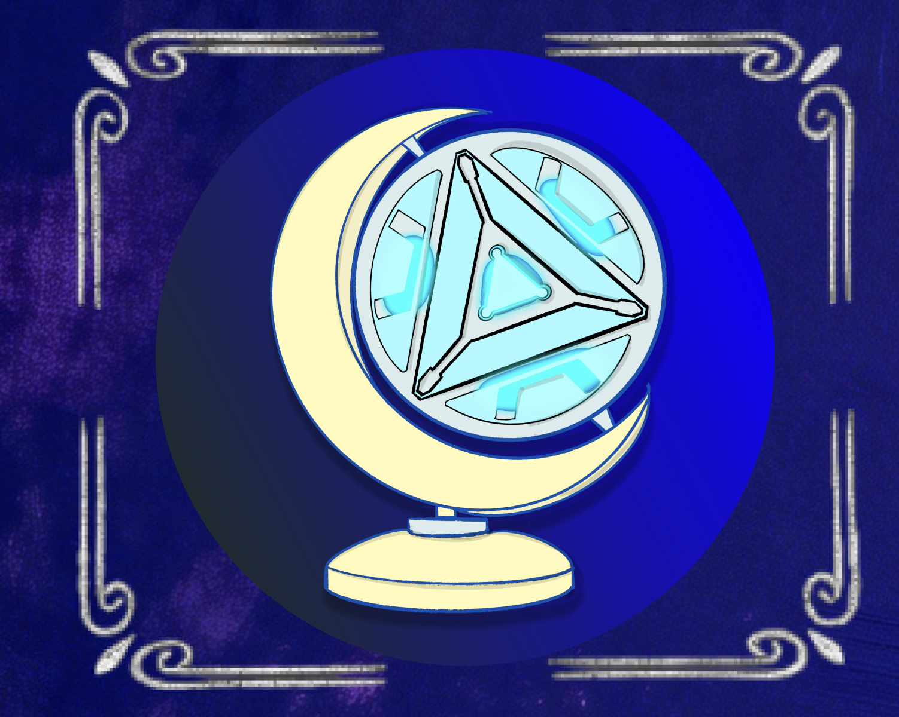
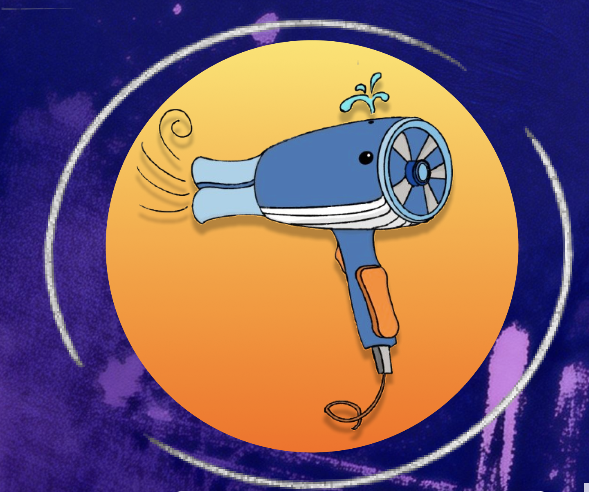